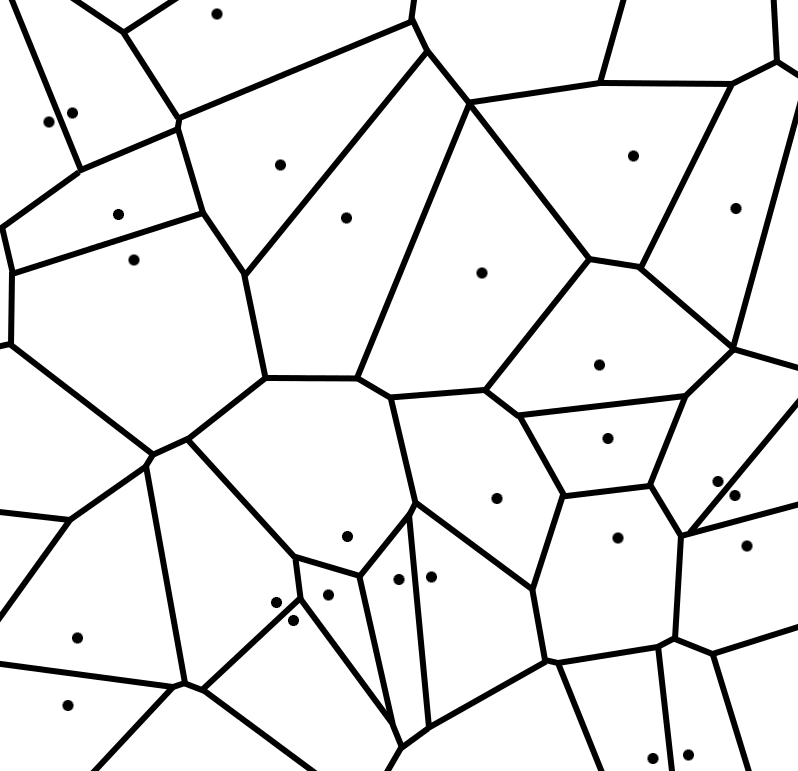

Morphogenèse urbaine
coévolution du réseau viaire et du bâti
Merwan Achibet
28 juin 2012
État de l'art
Automates cellulaires
Principe

Le jeu de la vie
Règles simples mais comportement complexe
Demo JS
Exemple géographique: la ségregation de Schelling
DEMO JS
Dans le cadre des simulations urbaines
Une cellule représente un sous-espace-urbain
Une cellule a un état
- Booléen (construit/)
- Type d'usage (résidentiel, commercial, industriel, ...)
Potentiels de transition
- Déterministe
- Stochastique
Exemple 1
Exemple 2
Limitations des automates cellulaires
La rigidité du formalisme des AC s'oppose à la fidélité des simulation.
- Discrétisation des états
- Synchronisme temporel
- Homogénéité
- Régularité
Relaxation de la régularité
David O'Sullivan propose l'utilisation d'automates
cellulaires graphes.

Relations
Multi-agents
Méthodes procédurales
- Basées sur des règles empiriques
- Seul l'aspect visuel compte
- Domaines applicatifs: infographie, jeu vidéo,
cinéma
Exemple 1: L-Systems
Exemple 2
Exemple 3
Le modèle
Objectif
- Proposer un modèle de croissance urbaine
- Reprenant le principe universel des automates
cellulaires
- Et reflétant l'irrégularité de la ville
- Tout en garantissant la cohérence temporelle
Choix d'une structure adaptée
- Partionne l'espace de façon irrégulière
- Crée des relations de voisinage par sa topologie
- Représente à la fois le viaire et le bâti
Voronoï !
Déf
Applications
Potentialité
Deux types d'éléments
- éléments construits
- éléments potentiels
Pourquoi ?
cohérence historique
Mécanisme 1: automate
Trois types de densité
- Faible (f)
- Moyenne (m)
- Élevée (e)
Une matrice d'affinité
MATRICE
Exemple 1
Exemple 2
Problème
PAS REALISTE
Solution
Exemple 3
Exemple 4
VIDEO
Mécanisme 2: placement des éléments potentiels
- Mécanisme précédent: croissance verticale
- Celui-ci: croissance verticale
Idée principale: guider l'expansion de la ville.
On se concentre sur le placement des parcelles
potentielles.
La dynamique urbaine est axée autour des centres denses de
la ville
- La graine est placée sur un centre
- Elle se déplace en fonction de variables inhérentes à la
ville
- Sa vitesse varie
- Quand elle s'arrête, on place une parcelle
potentielle
ASPECT PHYSIQUE
Champ densité
Champ densité
Champ routes
Champ obstacles
combinaison
Mécanisme 3: construction des éléments potentiels
routes
parcelles
Tests
Difficulté à obtenir des données
Simulation de tests et quelques mesures
Le Havre
On utilise comme configuration initiale une sous-partie du
Havre.
Particularité notables
- Profil côtier empêchant le développement urbain
- Un centre densitaire
- Quelques parcelles
VIDEO
Superficie
Superficie par type de densité
Diamètre
Degré des carrefours
Degré des carrefours en fonction de la distance
Biens
Pas biens